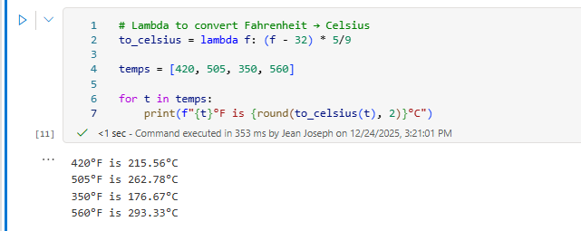
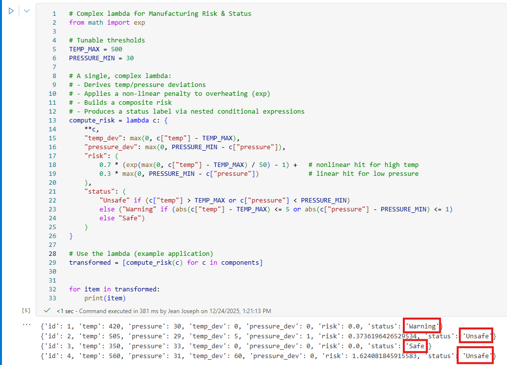
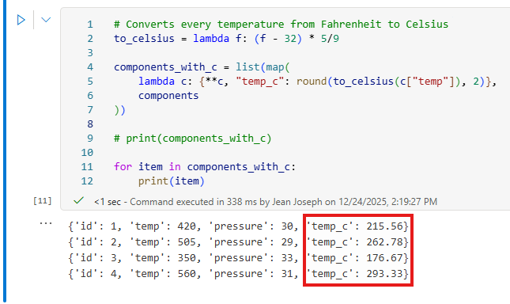
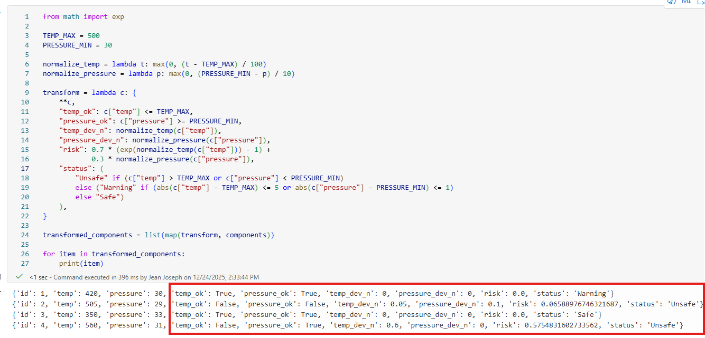
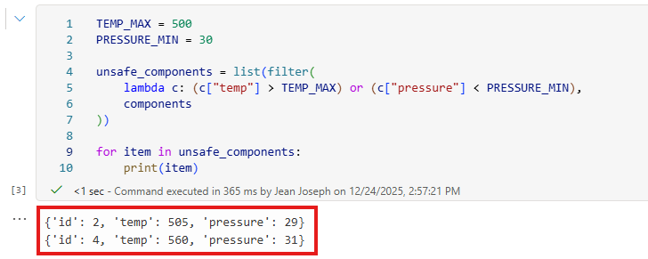
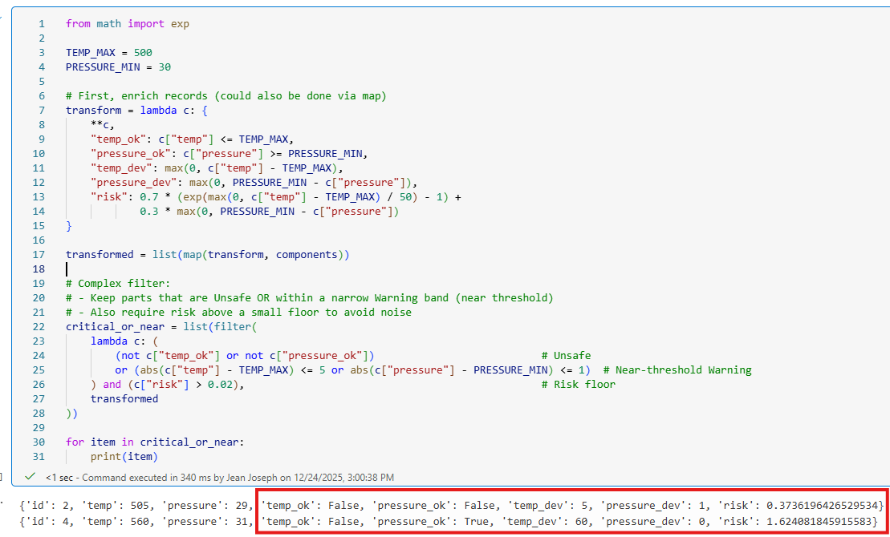
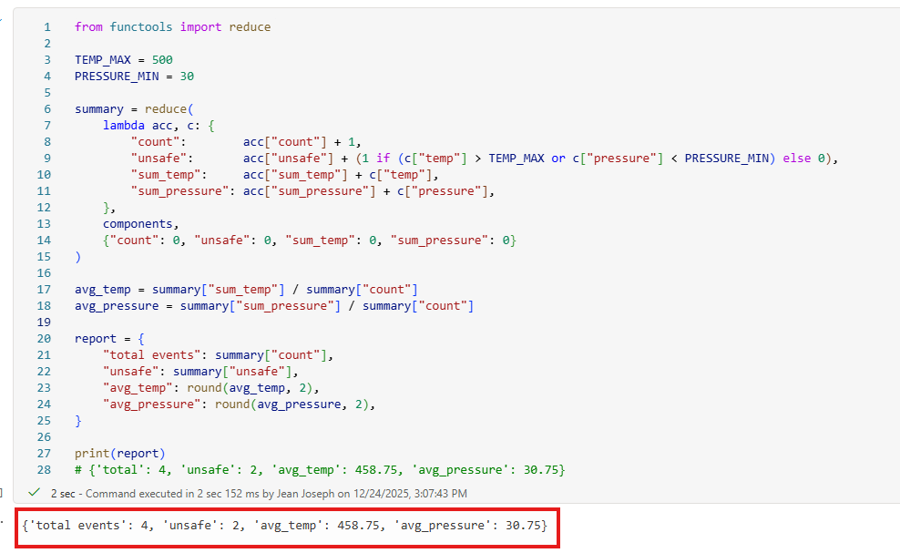
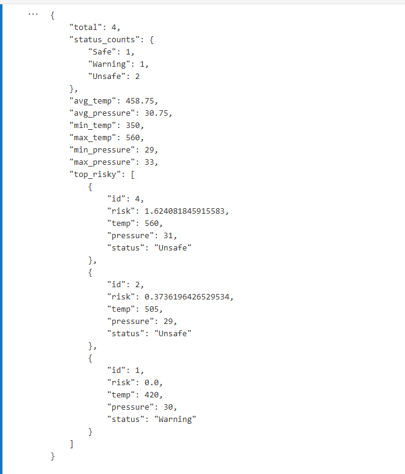

Published: December 26, 2025
Stay in the loop, follow us on LinkedIn to catch fresh articles every week.
If you're looking to get started with Generative AI, Agentic AI workflows, or migrating your workloads to Microsoft Fabric, partnering with Tech-Insight-Group LLC is your strategic gateway to expert-led consulting and hands-on training services tailored for real-world impact.
In many IoT environments, raw sensor readings arrive as unstructured, noisy streams. Temperatures spike without warning, pressure levels drift unpredictably, and components behave differently under real‑world load. Without a reliable way to evaluate safety, quantify risk, and understand overall system health, organizations are forced into a reactive posture, discovering failures only after they’ve already caused damage.
Most organizations struggle with:
These gaps create operational blind spots, delayed responses, and costly unplanned downtime. In predictive maintenance, that means missed early‑warning signals, inefficient maintenance cycles, and preventable failures—exactly the challenges your article highlights when transforming IoT data into actionable insights.
This article is ideal for data engineers, Python developers, and IoT practitioners who want a simple, functional approach to transforming raw sensor data into actionable insights.
I created this post to share a quick story from a recent 30‑minute customer call that unexpectedly turned into one of my easiest closes this year. The conversation with the IT manager flowed smoothly, we aligned on the challenges, the solution, the value, and by the time we were wrapping up, the deal was practically sealed. Then, just as the call was about to end, the customer kindly asked, “Do you mind if I bring our developers in for a moment?” Of course, not a problem at all.
When the developers joined, it became clear from the way they phrased their questions that there was some confusion around when to use lambda, map, filter, and reduce, especially as they’ve been using these patterns to perform complex data operations feeding their agentic AI systems and event‑processing workflows.
Their questions were thoughtful, but mixed together, so I asked a few clarifying questions to understand how their pipelines were structured. Once I had the full picture, I broke down the business use cases for each function in a simple and practical way.
That clarity resonated with them immediately, and that moment helped finalize the contract. moreover, that’s exactly why I’m sharing this post: if even experienced developers are navigating these kinds of questions, it’s worth giving the broader community a clear, real‑world breakdown too.
Alright, enough talk. Now let’s get into the practical, hands‑on side of things and use Microsoft Fabric Lakehouse as our environment. In the context of manufacturing workflows, where complex data manipulation powers everything from sensor streams to quality‑control decisions, choosing between lambda, map, filter, and reduce can make or break the clarity and efficiency of your pipeline. So let’s break down, in real terms, exactly when you should reach for each one in Python.
When Should You Use lambda, map, filter, or reduce in Python?
To keep things practical, we’ll work with a small sample of manufacturing component readings. Each record represents a component on the production line and includes its ID, temperature, and pressure, exactly the kind of data used in quality checks, anomaly detection, and event‑driven AI workflows:
components = [
{"id": 1, "temp": 420, "pressure": 30},
{"id": 2, "temp": 505, "pressure": 29},
{"id": 3, "temp": 350, "pressure": 33},
{"id": 4, "temp": 560, "pressure": 31},
]
Your job:
Let’s apply each function the way it was meant to be used.
In Python, a lambda() function is your go‑to tool when you need a tiny, one‑off function without cluttering your code with extra def statements. Think of it as a quick, disposable function you create on the spot, perfect for small transformations inside pipelines.
Let’s start with a very simple lambda() example. Consider that we want to convert a temperature from Fahrenheit (°F) to Celsius (°C). A lambda is perfect for this because it’s a tiny, one‑off function:
# Lambda to convert Fahrenheit → Celsius
to_celsius = lambda f: (f - 32) * 5/9
temps = [420, 505, 350, 560]
for t in temps:
print(f"{t}°F is {round(to_celsius(t), 2)}°C")
The screenshot below shows the output of the code above, which converts Fahrenheit (°F) into Celsius (°C).
Next, in this exploration, we focus on turning raw IoT telemetry into a state where agentic AI can take meaningful, preventative action. By applying a single, intelligent lambda function, each component’s temperature, pressure, and deviation patterns are transformed into a clear Manufacturing Risk and Status.
To ensure accuracy and consistent reasoning, we anchor the process with explicit thresholds TEMP_MAX = 500 and PRESSURE_MIN = 30, giving the AI a stable foundation to classify conditions, detect anomalies, and act proactively. This shift moves IoT data from passive monitoring to an actionable, AI‑driven state that supports real‑time intervention and predictive maintenance.
# Complex lambda for Manufacturing Risk & Status
from math import exp
# Tunable thresholds
TEMP_MAX = 500
PRESSURE_MIN = 30
# A single, complex lambda:
# - Derives temp/pressure deviations
# - Applies a non-linear penalty to overheating (exp)
# - Builds a composite risk
# - Produces a status label via nested conditional expressions
compute_risk = lambda c: {
**c,
"temp_dev": max(0, c["temp"] - TEMP_MAX),
"pressure_dev": max(0, PRESSURE_MIN - c["pressure"]),
"risk": (
0.7 * (exp(max(0, c["temp"] - TEMP_MAX) / 50) - 1) + # nonlinear hit for high temp
0.3 * max(0, PRESSURE_MIN - c["pressure"]) # linear hit for low pressure
),
"status": (
"Unsafe" if (c["temp"] > TEMP_MAX or c["pressure"] < PRESSURE_MIN)
else ("Warning" if (abs(c["temp"] - TEMP_MAX) <= 5 or abs(c["pressure"] - PRESSURE_MIN) <= 1)
else "Safe")
)
}
# Use the lambda (example application)
transformed = [compute_risk(c) for c in components]
for item in transformed:
print(item)
What the below output shows and why it’s “agentic AI” + event‑processing aware:
Your complex lambda enriches each raw reading with derived signals (temp_dev, pressure_dev), a composite risk score, and a status (Safe, Warning, Unsafe). That transformation turns passive telemetry into actionable state agents can reason over normalized deviations and risk, then choose behaviors (e.g., auto‑route Unsafe parts to a rework queue, raise events for Warning items, or log Safe parts).
In event workflows, the status acts as a routing key (topics/queues like quality.unsafe, quality.warning), the risk score enables priority ordering (triage the highest risk first), and the derived fields provide compact features for downstream policies, dashboards, or predictions. In short, the output moves from raw numbers to decision‑ready records, enabling autonomous agents and stream processors to trigger, prioritize, and persist the right actions in real time.
While it's true, that lambda can also be used to build closures, acting as a lightweight parameterized factory function. For the sake of keeping this article focused and concise, we’ll move past those patterns and shift directly into the map function.
In Python, map() function is your tool for applying the same transformation to every item in a list (or any iterable) without writing explicit loops. Think of it as a clean, pipeline‑friendly way to process data row‑by‑row: you give map a function, and it feeds each element through that function, returning a new transformed sequence. It’s perfect for data cleaning, feature engineering, batch conversions, and anywhere you want consistent operations applied across an entire dataset.
Best Use Case:
Avoid When:
This first map() python function demo shows how to apply a uniform transformation across the dataset by adding a Celsius temperature field to every component.
# Converts every temperature from Fahrenheit to Celsius
to_celsius = lambda f: (f - 32) * 5/9
components_with_c = list(map(
lambda c: {**c, "temp_c": round(to_celsius(c["temp"]), 2)},
components
))
# print(components_with_c)
for item in components_with_c:
print(item)
The output shows each component enriched with a new temp_c field, which contains its temperature converted from Fahrenheit to Celsius. You may notice that I combined map() with lambda, because using them together is ideal for quick, inline transformations across a sequence without defining a separate function or writing a loop.
Now, let’s explore a more advanced map() example to demonstrate how Python can handle richer transformations.
Purpose of below codes in a Manufacturing Context
In short: The below code turns raw readings into actionable intelligence, flagging risk, classifying parts, and preparing standardized features for real‑time routing, reporting, and AI‑driven decisions. To maximize accuracy, your intelligent process works best when thresholds are explicitly defined, which is why we set TEMP_MAX = 500 and PRESSURE_MIN = 30.
from math import exp
TEMP_MAX = 500
PRESSURE_MIN = 30
normalize_temp = lambda t: max(0, (t - TEMP_MAX) / 100)
normalize_pressure = lambda p: max(0, (PRESSURE_MIN - p) / 10)
transform = lambda c: {
**c,
"temp_ok": c["temp"] <= TEMP_MAX,
"pressure_ok": c["pressure"] >= PRESSURE_MIN,
"temp_dev_n": normalize_temp(c["temp"]),
"pressure_dev_n": normalize_pressure(c["pressure"]),
"risk": 0.7 * (exp(normalize_temp(c["temp"])) - 1) +
0.3 * normalize_pressure(c["pressure"]),
"status": (
"Unsafe" if (c["temp"] > TEMP_MAX or c["pressure"] < PRESSURE_MIN)
else ("Warning" if (abs(c["temp"] - TEMP_MAX) <= 5 or abs(c["pressure"] - PRESSURE_MIN) <= 1)
else "Safe")
),
}
transformed_components = list(map(transform, components))
for item in transformed_components:
print(item)
This output shows how the script transforms the raw dataset into AI‑ready signals by adding normalized temperature and pressure deviations, computing a composite risk score, and assigning a status label making each component immediately usable for agentic decision‑making and event‑processing workflows.
You’ve now learned how lambda() works on its own and how it pairs with map() to apply consistent transformations across your data. Let’s continue by looking at the filter() function, and afterward, we’ll dive into reduce() to complete the full processing pipeline.
In Python, filter() function is used to keep only the elements in a sequence that satisfy a specific condition. You provide filter with a function, often a lambda that returns True for the items you want to keep and False for the ones you want to discard.
Think of it as a built‑in quality gate: everything that passes the condition moves forward, and everything else is filtered out. This makes filter perfect for cleaning datasets, isolating unsafe or out‑of‑spec records, and routing data into the right processing path in analytics, automation, or AI workflows.
Example: Simple filter - Keep only unsafe components
TEMP_MAX = 500
PRESSURE_MIN = 30
unsafe_components = list(filter(
lambda c: (c["temp"] > TEMP_MAX) or (c["pressure"] < PRESSURE_MIN),
components
))
for item in unsafe_components:
print(item)
As expected, the filter returned only the components that violate the temperature or pressure limits.
Let’s walk through a more complex filter scenario, where we apply a multi‑condition quality gate using derived metrics.
What it does:
from math import exp
TEMP_MAX = 500
PRESSURE_MIN = 30
# First, enrich records (could also be done via map)
transform = lambda c: {
**c,
"temp_ok": c["temp"] <= TEMP_MAX,
"pressure_ok": c["pressure"] >= PRESSURE_MIN,
"temp_dev": max(0, c["temp"] - TEMP_MAX),
"pressure_dev": max(0, PRESSURE_MIN - c["pressure"]),
"risk": 0.7 * (exp(max(0, c["temp"] - TEMP_MAX) / 50) - 1) +
0.3 * max(0, PRESSURE_MIN - c["pressure"])
}
transformed = list(map(transform, components))
# Complex filter:
# - Keep parts that are Unsafe OR within a narrow Warning band (near threshold)
# - Also require risk above a small floor to avoid noise
critical_or_near = list(filter(
lambda c: (
(not c["temp_ok"] or not c["pressure_ok"]) # Unsafe
or (abs(c["temp"] - TEMP_MAX) <= 5 or abs(c["pressure"] - PRESSURE_MIN) <= 1) # Near-threshold Warning
) and (c["risk"] > 0.02), # Risk floor
transformed
))
for item in critical_or_near:
print(item)
The output shows exactly how the filter function isolates only the components that meet the complex safety logic specifically those that are either unsafe (failing temperature or pressure checks) or near the warning threshold while also applying a minimum risk floor to avoid noise. After the dataset is enriched with deviations and risk scores using map, filter selects only the records that require attention, producing a clean, action‑ready list of components for event routing, monitoring, or agentic AI decision-making.
Up to this point, we’ve explored how Python’s functional tools help us transform raw telemetry into intelligent, structured signals. We started with lambda(), using it for quick, lightweight computations. Then we saw how lambda() + map() work together to apply consistent transformations across every component by adding normalized fields, computing deviations, and generating risk scores.
After that, filter() function allowed us to isolate only the records that matter most: unsafe parts, near‑threshold items, or those crossing a minimum risk level. Together, these steps turned simple sensor readings into actionable, event‑ready data that an agentic AI system or event‑processing workflow can immediately act on.
Now, let’s focus on reduce() function, the final piece of the puzzle where we collapse the entire dataset into meaningful summaries, rollups, and performance metrics that drive reporting, monitoring, and higher‑level decision‑making.
In Python, reduce is used to take a sequence of values and repeatedly combine them using a function until only one final result remains. It’s perfect for creating rollups totals, counts, averages, aggregates, or any summary that represents the entire dataset in a single output.
Example: Simple reduce - Build a compact report (count, unsafe count, averages)
Why this works well:
from functools import reduce
TEMP_MAX = 500
PRESSURE_MIN = 30
summary = reduce(
lambda acc, c: {
"count": acc["count"] + 1,
"unsafe": acc["unsafe"] + (1 if (c["temp"] > TEMP_MAX or c["pressure"] < PRESSURE_MIN) else 0),
"sum_temp": acc["sum_temp"] + c["temp"],
"sum_pressure": acc["sum_pressure"] + c["pressure"],
},
components,
{"count": 0, "unsafe": 0, "sum_temp": 0, "sum_pressure": 0}
)
avg_temp = summary["sum_temp"] / summary["count"]
avg_pressure = summary["sum_pressure"] / summary["count"]
report = {
"total events": summary["count"],
"unsafe": summary["unsafe"],
"avg_temp": round(avg_temp, 2),
"avg_pressure": round(avg_pressure, 2),
}
print(report)
# {'total': 4, 'unsafe': 2, 'avg_temp': 458.75, 'avg_pressure': 30.75}
The output shows the final summary produced by reduce, which collapses the entire dataset into a single report containing the total number of components, how many were unsafe, and the average temperature and pressure across all readings.
Instead of simply aggregating totals and averages like the above output, let’s deliver a richer, more actionable summary that includes:
This enhanced summary not only captures system health at a glance, but also surfaces the most critical issues — enabling predictive maintenance teams to act proactively, not reactively.
from functools import reduce
from math import exp
import json
TEMP_MAX = 500
PRESSURE_MIN = 30
def classify_and_risk(c):
temp_ok = c["temp"] <= TEMP_MAX
pressure_ok = c["pressure"] >= PRESSURE_MIN
status = ("Unsafe" if (not temp_ok or not pressure_ok)
else ("Warning" if (abs(c["temp"] - TEMP_MAX) <= 5 or abs(c["pressure"] - PRESSURE_MIN) <= 1)
else "Safe"))
# Non-linear penalty for overheating; linear for low pressure
risk = 0.7 * (exp(max(0, c["temp"] - TEMP_MAX) / 50) - 1) + 0.3 * max(0, PRESSURE_MIN - c["pressure"])
return status, risk
initial = {
"count": 0,
"by_status": {"Safe": 0, "Warning": 0, "Unsafe": 0},
"sum_temp": 0,
"sum_pressure": 0,
"min_temp": float("inf"),
"max_temp": float("-inf"),
"min_pressure": float("inf"),
"max_pressure": float("-inf"),
"top_risky": [], # will store up to top 3 by risk
}
rollup = reduce(
lambda acc, c: (
# classify & score
(lambda status, risk: {
"count": acc["count"] + 1,
"by_status": {
**acc["by_status"],
status: acc["by_status"].get(status, 0) + 1
},
"sum_temp": acc["sum_temp"] + c["temp"],
"sum_pressure": acc["sum_pressure"] + c["pressure"],
"min_temp": min(acc["min_temp"], c["temp"]),
"max_temp": max(acc["max_temp"], c["temp"]),
"min_pressure": min(acc["min_pressure"], c["pressure"]),
"max_pressure": max(acc["max_pressure"], c["pressure"]),
# maintain top 3 risky components
"top_risky": sorted(
acc["top_risky"] + [{"id": c["id"], "risk": risk, "temp": c["temp"], "pressure": c["pressure"], "status": status}],
key=lambda x: x["risk"],
reverse=True
)[:3],
}) # end of inner lambda
)(*classify_and_risk(c)),
components,
initial
)
avg_temp = rollup["sum_temp"] / rollup["count"]
avg_pressure = rollup["sum_pressure"] / rollup["count"]
final_report = {
"total": rollup["count"],
"status_counts": rollup["by_status"],
"avg_temp": round(avg_temp, 2),
"avg_pressure": round(avg_pressure, 2),
"min_temp": rollup["min_temp"],
"max_temp": rollup["max_temp"],
"min_pressure": rollup["min_pressure"],
"max_pressure": rollup["max_pressure"],
"top_risky": rollup["top_risky"],
}
print(json.dumps(final_report, indent=4))
# Example:
# {
# 'total': 4,
# 'status_counts': {'Safe': 2, 'Warning': 0, 'Unsafe': 2},
# 'avg_temp': 458.75,
# 'avg_pressure': 30.75,
# 'min_temp': 350,
# 'max_temp': 560,
# 'min_pressure': 29,
# 'max_pressure': 33,
# 'top_risky': [
# {'id': 4, 'risk': 0.575..., 'temp': 560, 'pressure': 31, 'status': 'Unsafe'},
# {'id': 2, 'risk': 0.096..., 'temp': 505, 'pressure': 29, 'status': 'Unsafe'},
# {'id': 1, 'risk': 0.0, 'temp': 420, 'pressure': 30, 'status': 'Safe'}
# ]
# }
This below output shows a deeper insight supports real‑time monitoring, predictive maintenance, and AI‑driven decision‑making by surfacing not just what happened, but where the greatest risks lie.
Throughout this walkthrough, we explored how Python’s functional tools like lambda(), map(), filter(), and reduce() functions work together to turn raw telemetry into structured, intelligent, decision‑ready data. We saw how lambda provides lightweight, inline logic for quick math and transformations; how map applies those transformations uniformly across every record; how filter selects only the entries that matter (unsafe or near‑threshold); and how reduce collapses the full dataset into meaningful summaries and KPIs for reporting, monitoring, and agentic AI workflows.
Together, these functions form a clean, pipeline‑friendly approach for processing manufacturing data:
🔚 TL;DR Summary:
For Data/AI pipelines: Use these tools when you need clean transforms, streaming-friendly logic, and memory-safe operations, but lean on comprehensions and built-ins for clarity and speed.
If you’re reading this to kick off your first AI, Data project, streamline your current workflow, or upskill your team for what’s next. Tech-Insight-Group LLC is here to help. We specialize in turning AI potential into practical impact through expert consulting and hands-on training. Visit our services page to explore how we can support your journey from strategy to execution. Let’s build something extraordinary together.
Thank you for reading Turning IoT Data into Actionable Insights with Four Python Functions: lambda, map, filter, reduce. If you found this article helpful, feel free to like, share, or leave a comment; we’d love to hear your thoughts.
Kudos to our entire team for their dedication, and a special shoutout to Jean Joseph, our Principal Data & AI Architect, whose vision and technical leadership made this work possible.
Leave a Comment
Comments: